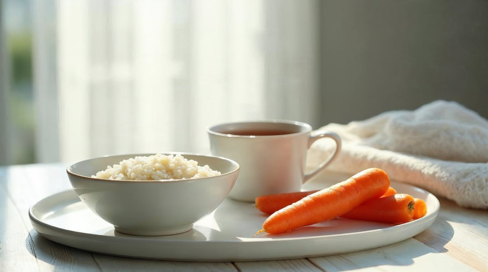
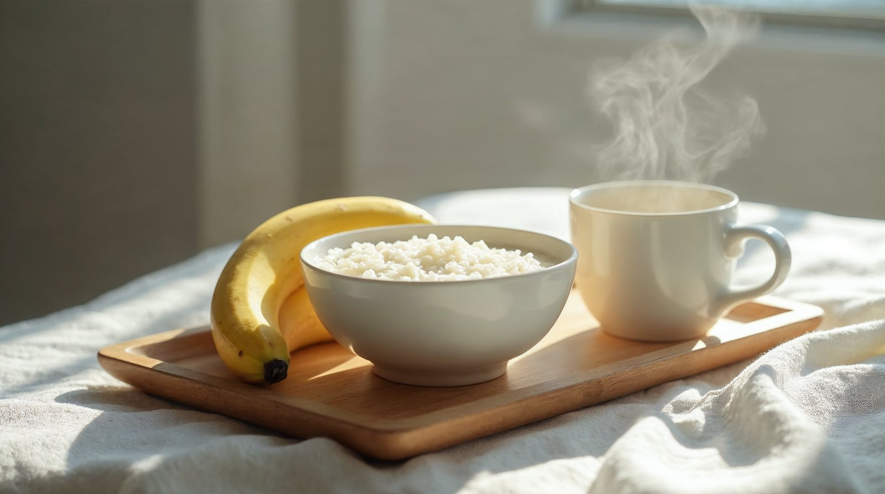
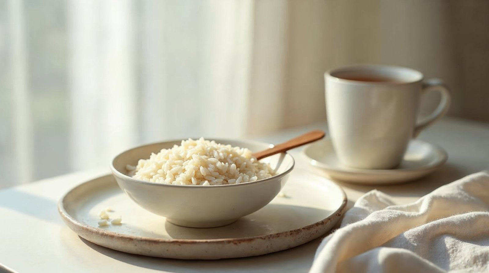
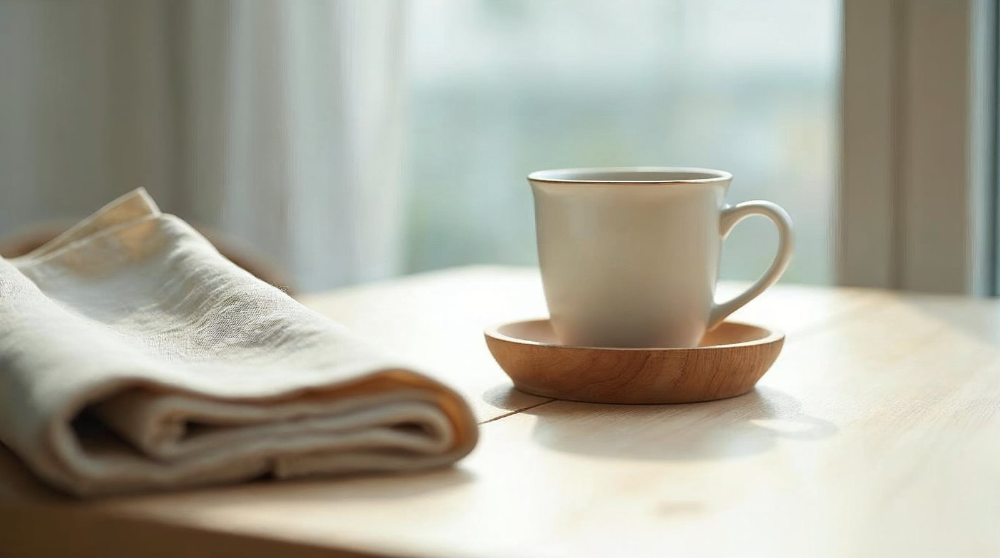
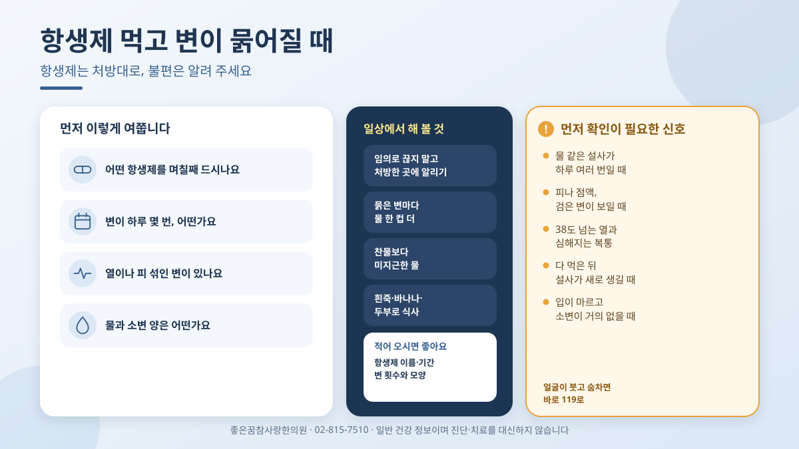

이종호 한의사 감수좋은꿈참사랑한의원 대표원장 (한의사 면허번호 19769)발행 2026-11-27 · 수정 2026-11-27
이 글의 차례
겨울 감기가 길어져 축농증이나 중이염, 기관지염으로 항생제를 처방받아 먹다 보면, 사나흘째부터 변이 묽어지고 배가 꾸르륵거리며 가스가 자주 차는 분이 적지 않습니다. 항생제는 원인이 되는 세균을 줄이는 과정에서 장 속에 원래 살던 균의 균형도 함께 흔들 수 있어, 묽은 변과 배 불편이 생길 수 있습니다.
대부분은 하루 두세 번 정도의 묽은 변으로 지나가고 약을 다 먹은 뒤 며칠에서 길게는 몇 주에 걸쳐 돌아오는 경우가 많지만, 그동안 물이 빠져나가 몸이 지치지 않게 챙기는 것이 중요합니다. 항생제는 불편하다고 임의로 끊거나 남기지 말고, 처방한 병원이나 약국에 설사가 생겼다고 알리고 상의하세요.
그사이 물과 따뜻한 보리차를 자주 나눠 마시고, 기름지고 매운 음식과 찬 음식, 술은 쉬어 가며, 죽이나 부드러운 밥처럼 장이 편한 식사로 바꿔 봅니다. 다만 하루 여러 번 물 같은 설사가 이어지거나, 피나 점액이 섞인 변, 열과 심한 복통이 있거나, 항생제를 다 먹은 뒤에 오히려 설사가 심해졌다면 바로 진료를 받으세요.
왜 항생제를 먹으면 변과 배가 달라질까요
- 장에는 소화와 배변을 돕는 다양한 균이 함께 살고 있습니다. 항생제는 문제를 일으키는 세균을 줄이는 약이지만 장에 원래 살던 균에게도 영향을 줄 수 있어, 균형이 흔들리면 변이 묽어지고 가스가 늘 수 있습니다.
- 장내 균이 줄면 다 소화되지 않은 탄수화물이 장에 남아 물을 끌어당기고, 발효되며 가스와 꾸르륵 소리를 만들기도 합니다.
- 일부 항생제는 장의 움직임을 빠르게 하는 쪽으로 작용해, 먹고 얼마 지나지 않아 배가 살살 아프고 화장실이 급해지기도 합니다.
- 감기를 앓는 동안 입맛이 없어 끼니를 거르고, 진통제나 감기약을 함께 먹으며, 잠이 부족해 장의 리듬이 이미 흐트러져 있는 경우가 많습니다.
- 겨울에는 물을 덜 마셔서 묽은 변으로 빠져나간 수분을 제때 채우지 못해 쉽게 지치고 어지러울 수 있습니다.
- 드물지만 항생제를 먹은 뒤 장 속에서 특정 균(클로스트리디오이데스 디피실리 등)이 늘어나 하루 여러 번 물 같은 설사와 열, 복통을 일으키는 장염이 생길 수 있습니다. 항생제를 다 먹고 몇 주 안에 생기기도 해 주의가 필요합니다.
- 연세가 많거나, 최근 여러 번 항생제를 먹었거나, 위산을 줄이는 약을 오래 먹는 분은 이런 불편이 더 잘 생기는 쪽으로 알려져 있습니다.
- 한의학에서는 감기를 앓느라 지친 몸에서 비위의 기운이 약해지면 먹은 것을 잘 돌리지 못해 변이 묽어진다고 보기도 하고, 배 속에서 꾸르륵거리는 소리를 장명(腸鳴)이라 부르며 배가 찬 정도와 함께 살펴봅니다.

먼저 이렇게 여쭙니다
- 어떤 병으로 어떤 항생제를 언제부터 며칠 동안 처방받았는지 여쭙니다. 약 봉투나 처방전을 보여 주시면 정확합니다.
- 변이 묽어진 것이 항생제를 먹고 며칠째부터인지, 하루 몇 번인지, 물 같은지 죽 같은지 여쭙니다.
- 피나 점액이 섞이는지, 열이나 오한이 있는지, 배가 어디가 얼마나 아픈지 여쭙니다.
- 물과 음식은 얼마나 드시는지, 소변 양과 색은 어떤지, 일어설 때 어지러운지 여쭙니다.
- 감기약, 진통제, 위산을 줄이는 약, 유산균이나 다른 영양제를 함께 드시는지 여쭙니다.
- 최근 몇 달 사이 항생제를 먹은 적이 또 있는지, 그때도 비슷했는지 여쭙니다.
- 가족 가운데 같은 시기에 설사나 구토를 하는 사람이 있는지도 여쭙니다. 여럿이 함께 그렇다면 장염 바이러스나 음식의 영향일 수도 있습니다.
- 평소 변이 잘 묽어지는 편인지, 찬 음식에 예민한지 여쭙니다.

일상에서 먼저 해 볼 수 있는 것
항생제는 처방대로, 불편은 알리기
- 항생제는 변이 묽어졌다고 임의로 끊거나 남기지 않습니다. 정해진 기간을 채우지 않으면 원래 치료하던 병이 다시 심해지거나 약이 잘 듣지 않게 될 수 있습니다.
- 설사가 생겼다면 처방한 병원이나 약국에 전화해 알리고, 계속 먹어도 되는지, 다른 약으로 바꿀지 상의합니다.
- 식사와 함께 먹으라는 약인지, 빈속에 먹으라는 약인지 약 봉투의 안내를 다시 확인합니다. 식후 복용 약을 빈속에 먹으면 속이 더 불편할 수 있습니다.
- 집에 있던 지사제를 먹고 싶다면 먼저 약사나 의사와 상의합니다. 열이나 피 섞인 변이 있을 때는 장 속 원인이 빠져나가지 못하게 할 수 있어 함부로 쓰지 않습니다.
물 채우기
- 묽은 변을 볼 때마다 물이나 보리차를 한 컵(200mL 안팎) 더 마신다고 생각하고, 한 번에 많이 마시기보다 10~15분마다 몇 모금씩 나눠 마십니다.
- 설사가 잦고 입이 마르며 소변이 진하다면, 약국에서 파는 경구 수액(전해질 용액)을 안내에 따라 마시는 방법이 있습니다. 이온 음료는 당이 많아 물로 반쯤 희석해 마시는 분도 있습니다.
- 찬물보다 미지근한 물이 배를 덜 자극합니다.
장이 편한 식사로 바꾸기
- 설사가 잦은 날은 흰죽, 미음, 누룽지, 부드러운 진밥, 바나나, 삶은 감자, 두부, 달걀찜처럼 부드럽고 기름기 적은 음식을 조금씩 자주 먹습니다.
- 기름진 음식, 튀김, 매운 국물, 날것과 찬 음식, 술, 커피는 변이 돌아올 때까지 쉬어 갑니다.
- 우유와 유제품을 먹고 배가 더 꾸르륵거린다면 며칠 쉬어 봅니다. 장이 지친 동안에는 유제품이 평소보다 부담이 될 수 있습니다.
- 잡곡, 생채소, 콩처럼 섬유질이 많은 음식은 변이 돌아오기 시작하면 조금씩 다시 늘립니다.
- 끼니를 거르고 밤에 한꺼번에 먹지 말고, 하루 네다섯 번으로 나눠 조금씩 먹습니다.
유산균은 상의해서
- 항생제를 먹는 동안 유산균을 함께 먹을지, 먹는다면 항생제와 몇 시간 간격을 둘지는 약사나 의사와 상의합니다. 면역이 많이 떨어진 상태라면 유산균도 주의가 필요할 수 있습니다.
배와 몸 쉬게 하기
- 배가 차고 꾸르륵거릴 때는 얇은 담요나 복대로 배를 따뜻하게 하고, 손바닥으로 배꼽 주변을 시계 방향으로 부드럽게 쓸어 줍니다.
- 감기 끝이라 몸이 지쳐 있으니 잠을 평소보다 30분~1시간 더 자고, 운동은 변이 돌아온 뒤 가벼운 걷기부터 다시 시작합니다.
- 화장실을 다녀온 뒤에는 비누로 30초 이상 손을 씻습니다. 집에 어린아이나 어르신이 있다면 수건을 따로 씁니다.
상황별 예시
- 예를 들어 감기 뒤 누런 콧물과 얼굴 통증이 이어져 축농증으로 항생제를 처방받은 직장인이, 사흘째부터 하루 두세 번 묽은 변을 보고 배가 꾸르륵거리는 경우, 항생제는 처방대로 이어 가면서 약국에 설사가 생겼다고 알리고, 물을 자주 나눠 마시며 점심을 흰죽이나 진밥, 두부 위주로 바꿔 봅니다. 연말 회식은 약을 다 먹고 변이 돌아올 때까지 미룹니다.
- 예를 들어 아이의 중이염으로 항생제를 먹이는 맞벌이 부모가, 아이 변이 묽어지고 기저귀 발진이 생겨 약을 그만 먹여도 되는지 고민하는 경우, 임의로 끊기보다 처방한 소아청소년과에 설사 횟수와 모양을 알려 상의합니다. 아이가 소변을 평소보다 눈에 띄게 적게 보거나, 늘어지고 잘 먹지 않는다면 바로 진료를 받습니다.
- 예를 들어 기관지염으로 항생제를 일주일 먹고 다 끝냈는데, 그로부터 열흘쯤 지나 하루 대여섯 번 물 같은 설사와 열, 아랫배 통증이 생긴 경우에는 생활 조절로 버티지 말고 항생제를 먹었던 사실을 알리며 바로 진료를 받습니다.
- 예를 들어 연세가 있으신 부모님이 폐렴 치료로 항생제를 드신 뒤 묽은 변이 계속되고 입맛이 떨어져 기운이 없으신 경우, 물과 부드러운 식사를 자주 챙겨 드리며 소변 양과 어지럼을 살피고, 설사가 이틀 넘게 이어지거나 어지러워하시면 바로 병원에 알립니다.
자주 하는 오해
- 설사가 나면 항생제가 몸에 안 맞는 것이니 바로 끊어야 한다고 여기기 쉽지만, 임의로 끊으면 원래 병이 다시 심해질 수 있어 처방한 의사와 상의하는 것이 먼저입니다.
- 설사할 때는 굶어야 장이 쉰다고 생각하는 분도 있습니다. 오래 굶으면 오히려 기운이 떨어지고 회복이 더딜 수 있어, 부드러운 음식을 조금씩 자주 먹는 편이 좋습니다.
- 지사제를 먹으면 금방 멎으니 편하다고 여기기 쉽지만, 열이나 피 섞인 변이 있을 때는 함부로 쓰지 않고 먼저 상의합니다.
- 유산균만 먹으면 다 해결된다고 생각하기 쉽지만, 사람과 상황에 따라 맞는 정도가 다르고, 물과 식사, 쉬는 것이 먼저입니다.
- 항생제를 다 먹고 나면 설사 걱정은 끝이라고 여기기 쉬운데, 드물게 다 먹은 뒤 몇 주 안에 심한 설사가 생기기도 해 그 기간에도 변화를 살핍니다.
스스로 점검해 보세요
- 최근 2주 안에 항생제를 먹기 시작했거나 다 먹었다.
- 하루 세 번 이상 묽은 변을 본다.
- 배가 꾸르륵거리고 가스가 자주 차며, 찬 음식을 먹으면 더 불편하다.
- 물을 하루 서너 잔도 마시지 않고, 소변 색이 진하다.
- 감기 뒤 입맛이 없어 끼니를 자주 거른다.
- 최근 몇 달 사이 항생제를 두 번 이상 먹었다.
- 위산을 줄이는 약을 오래 먹고 있다.
한의원에서 함께 살필 수 있는 경우
- 항생제를 다 먹고 병원에서 큰 문제는 없다고 들었지만, 묽은 변과 배 불편, 입맛 저하가 길게 남아 있는 경우
- 감기를 앓고 난 뒤 기운이 떨어지고, 배가 차며 찬 음식에 예민해진 경우
- 겨울마다 감기가 길어져 항생제를 여러 번 먹게 되어, 몸을 어떻게 추스를지 함께 정리하고 싶은 경우
- 평소 변이 잘 묽어지는 편인데 이번에 더 심해진 경우
좋은꿈참사랑한의원에서는 첫 방문 때 어떤 병으로 어떤 항생제를 언제부터 드셨는지, 변이 묽어진 시점과 횟수, 모양, 열과 복통, 물과 식사, 잠을 먼저 차례로 여쭙고, 약 봉투나 처방전이 있으면 함께 봅니다.
그다음 맥부터 짚어 보고, 혀의 색과 설태, 배를 눌렀을 때 차거나 아픈 곳, 꾸르륵거리는 정도를 살펴 감기 뒤 몸이 얼마나 지쳐 있는지, 속이 찬 편인지 확인합니다. 필요하면 혈액 검사기로 기본 상태를 함께 볼 수 있는지 상의하며, 검사 가능한 항목은 방문 전 전화로 확인해 주세요.
그 결과를 바탕으로 물과 식사를 어떻게 되돌릴지, 쉬는 시간과 걷기를 언제부터 늘릴지 함께 정하고, 필요하면 침이나 뜸, 한약을 상의합니다. 항생제를 아직 드시는 중이라면 처방한 병원의 안내를 우선하고, 한약을 함께 드실 수 있는지는 상담에서 확인합니다.
하루 여러 번 물 같은 설사나 열, 피 섞인 변처럼 병원 진료가 먼저 필요한 신호가 있으면 그렇게 안내해 드립니다. 다시 오시면 지난번 이야기를 이어서 여쭈며 대변과 입맛, 기운이 어떻게 달라졌는지 함께 봅니다.

얼마나 지켜보고 언제 상담할까요
- 항생제를 먹는 동안 하루 두세 번 정도의 묽은 변이라면 물과 식사를 조절하며 지켜보고, 처방한 병원이나 약국에 알려 둡니다.
- 항생제를 다 먹은 뒤 3~7일 안에 변이 조금씩 단단해지는지 봅니다. 사람에 따라 몇 주에 걸쳐 천천히 돌아오기도 합니다.
- 2주가 지나도 묽은 변과 배 불편이 이어지거나 입맛과 기운이 돌아오지 않으면 상담을 받아 보세요.
- 아래 신호가 있다면 지켜보지 말고 바로 진료를 받습니다.

이렇게 기록해 오시면 상담이 쉬워집니다
- 처방받은 항생제 이름과 복용 기간(약 봉투, 처방전 사진)
- 변이 묽어진 날짜와 하루 횟수, 모양(물 같음, 죽 같음, 무른 변)
- 열, 복통, 피나 점액이 섞였는지 여부
- 하루 마신 물의 양과 소변 색, 먹은 음식
- 함께 먹은 약과 유산균, 영양제
- 최근 몇 달 사이 항생제를 먹은 횟수
이런 증상은 먼저 확인이 필요합니다
- 하루 여러 번(대략 대여섯 번 이상) 물 같은 설사가 이어지는 경우
- 변에 피나 점액이 섞이거나, 검은 변을 보는 경우
이런 신호가 있으면 한의원보다 가까운 병원이나 응급실을 먼저 찾으세요.
관련 글
- 몸살이나 감기를 앓고 난 뒤 입맛이 돌아오지 않을 때는 어떻게 하나요?
- 유산균을 챙겨 먹는데도 배가 계속 불편할 때는 무엇을 살피나요?
- 속이 안 좋은 날에는 식사를 어떻게 조절하면 좋을까요?

여쭙는 것
- 어떤 병으로 어떤 항생제를 언제부터 며칠 동안 처방받았는지 여쭙니다. 약 봉투나 처…
- 변이 묽어진 것이 항생제를 먹고 며칠째부터인지, 하루 몇 번인지, 물 같은지 죽 같…
- 피나 점액이 섞이는지, 열이나 오한이 있는지, 배가 어디가 얼마나 아픈지 여쭙니다.
생활에서 해 볼 것
- 항생제는 변이 묽어졌다고 임의로 끊거나 남기지 않습니다. 정해진 기간을 채우지 않으…
- 설사가 생겼다면 처방한 병원이나 약국에 전화해 알리고, 계속 먹어도 되는지, 다른…
- 식사와 함께 먹으라는 약인지, 빈속에 먹으라는 약인지 약 봉투의 안내를 다시 확인합…
한의원에서 함께 살필 것
- 항생제를 다 먹고 병원에서 큰 문제는 없다고 들었지만, 묽은 변과 배 불편, 입맛…
- 감기를 앓고 난 뒤 기운이 떨어지고, 배가 차며 찬 음식에 예민해진 경우
- 겨울마다 감기가 길어져 항생제를 여러 번 먹게 되어, 몸을 어떻게 추스를지 함께 정…
먼저 확인이 필요한 신호
- 하루 여러 번(대략 대여섯 번 이상) 물 같은 설사가 이어지는 경우
- 변에 피나 점액이 섞이거나, 검은 변을 보는 경우
한눈에 보는 표
| 구분 | 핵심 |
|---|---|
| 여쭙는 것 | 어떤 병으로 어떤 항생제를 언제부터 며칠 동안 처방받았는지 여쭙니다. 약 봉투나 처방전을 보여 주시면 정확합니다. 변이 묽어진 것이 항생제를 먹고 며칠째부터인지, 하루 몇 번인지, 물 같은지 죽 같은지 여쭙니다. |
| 생활에서 해 볼 것 | 항생제는 변이 묽어졌다고 임의로 끊거나 남기지 않습니다. 정해진 기간을 채우지 않으면 원래 치료하던 병이 다시 심해지거나 약이 잘 듣지 않게 될 수 있습니다. 설사가 생겼다면 처방한 병원이나 약국에 전화해 알리고, 계속 먹어도 되는지, 다른 약으로 바꿀지 상의합니다. |
| 한의원에서 함께 살필 것 | 항생제를 다 먹고 병원에서 큰 문제는 없다고 들었지만, 묽은 변과 배 불편, 입맛 저하가 길게 남아 있는 경우 감기를 앓고 난 뒤 기운이 떨어지고, 배가 차며 찬 음식에 예민해진 경우 |
| 먼저 확인이 필요한 신호 | 하루 여러 번(대략 대여섯 번 이상) 물 같은 설사가 이어지는 경우 변에 피나 점액이 섞이거나, 검은 변을 보는 경우 |
자주 묻는 질문
항생제를 먹고 설사를 하면 약을 끊어야 하나요?
임의로 끊으면 원래 치료하던 병이 다시 심해질 수 있어, 처방한 병원이나 약국에 설사가 생겼다고 먼저 알리고 상의해 주세요. 물 같은 설사가 잦거나 열, 피 섞인 변이 있다면 바로 진료를 받습니다.
유산균을 항생제와 같이 먹어도 되나요?
함께 먹을지, 먹는다면 몇 시간 간격을 둘지는 약사나 의사와 상의해 주세요. 면역이 많이 떨어진 상태이거나 큰 병으로 치료 중이라면 유산균도 주의가 필요할 수 있습니다.
설사할 때 무엇을 먹으면 좋을까요?
흰죽, 미음, 진밥, 바나나, 두부, 달걀찜처럼 부드럽고 기름기 적은 음식을 조금씩 자주 드세요. 물은 10~15분마다 몇 모금씩 나눠 마시고, 기름진 음식과 매운 음식, 찬 음식, 술은 변이 돌아올 때까지 쉬어 갑니다.
항생제를 다 먹었는데 일주일이 지나도 변이 묽어요.
장 속 균의 균형이 돌아오는 데 몇 주가 걸리는 분도 있어, 하루 한두 번 무른 변 정도라면 식사를 조절하며 지켜볼 수 있습니다. 다만 횟수가 늘거나 열, 복통, 피 섞인 변이 생기면 항생제를 먹었던 사실을 알리고 바로 진료를 받으세요.
한의원에서는 감기 뒤 이런 속 불편을 어떻게 살피나요?
어떤 약을 언제 드셨는지와 대변, 물, 식사, 잠을 먼저 여쭙고 맥부터 짚어 봅니다. 혀와 배를 살펴 속이 찬 편인지, 몸이 얼마나 지쳐 있는지 확인한 뒤 식사를 되돌리는 순서와 쉬는 방법을 함께 정합니다.
좋은꿈참사랑한의원은 재진 때 지난번 이야기부터 이어서 여쭙니다. 진료시간과 예약은 오시는 길에서 확인하세요.
어디서 상담받을 수 있나요?
좋은꿈참사랑한의원은 서울 동작구 만양로2길 2 신성빌딩 3층·5층(서울 동작구 상도동, 7호선 상도역 3번 출구 근처)에 있습니다. 한의사 3명(이종호 대표원장, 조영기 수석진료원장, 정원영 진료원장)이 진료합니다. 진료시간은 평일 09:30~20:00(점심 13:00~14:00), 토·일·공휴일 09:30~15:00이며, 방문 전 전화로 확인을 권합니다. 예약은 네이버 예약, 카카오톡 상담, 전화 02-815-7510로 받습니다.
이 글은 일반적인 건강 정보이며 개인의 진단이나 치료를 대신하지 않습니다. 증상이 있거나 복용 중인 약이 있다면 진료를 통해 확인하세요. 치료 효과는 개인마다 다를 수 있습니다.
작성 기준: 일반적으로 알려져 있는 건강 정보를 참고해 정리했습니다(대표원장 감수). 증상 기록은 1~2주 동안 하루 1회, 비슷한 시간에 적어 오시면 지난 상태와 비교하기 쉽습니다.